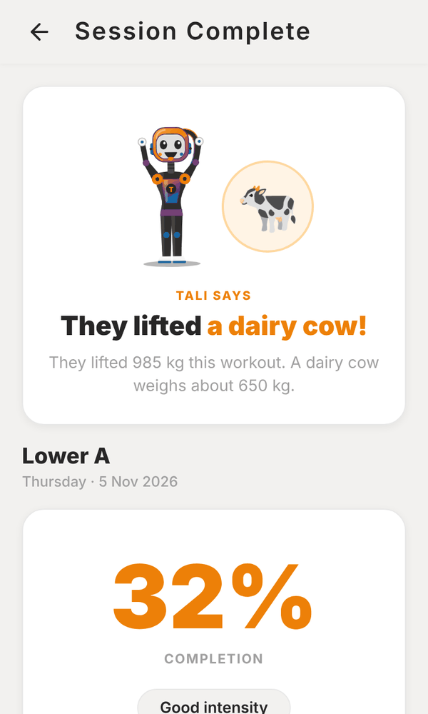
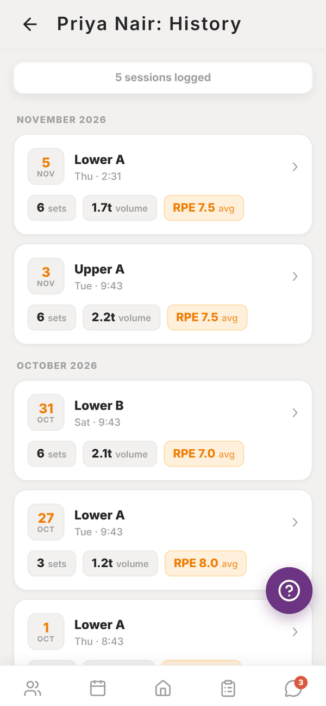
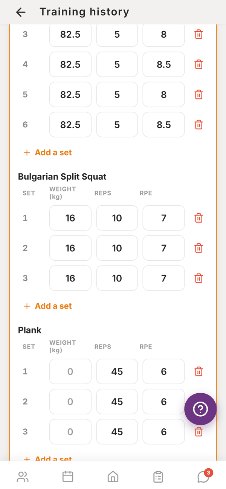

Totality for trainers
Session summary and history
The summary you see after a session, and every past session a client has logged, by month.
Session summary#
After you finish a session, Session Complete shows how it went. Tali puts the total weight lifted into perspective (a grand piano, a dairy cow and so on). Below that:
- The session name and date, and how long it took.
- Completion: the share of sets done, with a line on the intensity ("Light session", "Good intensity" or "Intense session", based on the average RPE).
- Avg RPE, Volume (total weight lifted) and Sets Done.
- Exercise Breakdown: sets done and average RPE for each exercise.
Tap Done to go back.


A client's full history#
On the client's profile, under Recent session logs, tap Full history →. Their sessions are grouped by month, newest first. Each card shows the date, session name, time, number of sets, total volume and average RPE.
Tap a card to expand it and see every exercise and every set, with weight, reps and RPE.
Fix a client's logged workout#

- Open the session card and tap Edit this workout.
- Change any set's weight, reps or RPE, tap Add a set, or remove one.
- Tap Save changes. If you removed sets, Totality checks first, because they come out of the client's history for good.
The top of the history shows the LAST 30 DAYS: volume lifted and when they last trained.
The history shows the most recent activity. If a client has a very long history, older sessions may not all show here.
Your own history#
Your own sessions live in Me, My training, History. See My training.
Questions#
A client's session isn't in their history.
Sessions show once they're saved. If the session was run on a phone that lost signal, open the session again on that phone. The unsaved sets are restored and you can tap Finish.
Is volume in kilograms?
Volume uses your lifting weight unit from Settings > Units and region.
Can I edit a logged session?
Not from the history screen.